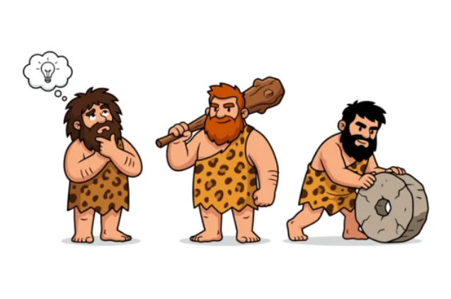
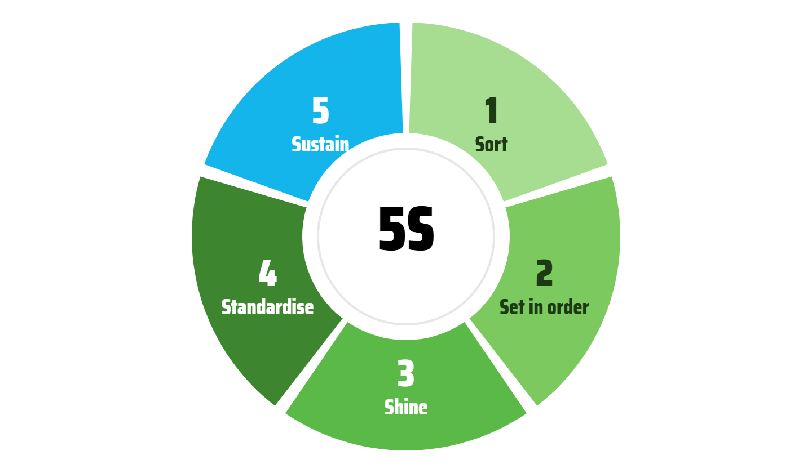

Eyes that see.
I have suggested AI to a lot of tradies this year. Every single one said the same three things. This issue is about why that is the right answer and why the first step is not a tool at all. It is learning to see.

From the trenchesThe three things every tradie says
I don't have time. I wouldn't know how to do it alone. I'm not sure what I'd even use it on.
I have heard those three sentences, in that order, from builders, sparkies, landscapers and a mechanic. And they are right. You cannot improve a business you cannot yet see and most owners of small trade businesses cannot see theirs, because they are inside it, on the tools, with the paperwork waiting for 9pm. Survival mode is not a character flaw. It is what happens when everything routes through one person.
So the first step is not AI. It is not new software either. It is much smaller than that and it is the same for every trade.
One tool, one useSort one thing
First, one word. Kaizen is Japanese for continuous improvement: small changes, every day, towards work that flows. It is the thinking behind Toyota and behind every calm, well-run business I have ever seen. You will also hear it called lean, which is the American version with more focus on cutting waste. In my work I use the two names interchangeably, because for a tradie on a Tuesday the difference does not matter. What matters is that it gives you a set of simple tools and an order to use them in. This is the first one.

Pick one place that annoys you every time you open it: the ute, the container, the paperwork corner, the job software. One afternoon. Everything out, three piles: keep, move, bin. Put back only what you use weekly.
By Monday the result is visible. That is the point. Seeing a change is what makes the next one believable.
Here is what I have watched happen next, more than once. The owner sorts the ute. Then they notice the second trip to the merchant. Then the twenty minutes hunting for a fitting. Lean has a name for each of those and once a waste has a name it starts to frustrate you and the frustration tells you exactly where to look next. That is rung two and they got there on their own.
Something else happens that I did not expect when I started mentoring. Ask an owner who has just done this which of your crew thinks this way and they can answer instantly. That person brings them problems and ideas. They can also name who doesn't. A few weeks later the business is quietly different: the owner is running a process business instead of putting out fires, one or two staff have stepped up and occasionally one has left because they preferred it the old way. All from sorting a ute and naming three wastes.
Most tradies never go further than these basics. They don't need to. The change is in how they see the business and that changes how they lead it.
What I am buildingA tool that asks my questions for me
In a mentoring session the first twenty minutes are always the same four questions. What is bugging you most? How many of you? Where does a job live right now? And is there someone on your crew who brings you problems and ideas?
So I built those four questions as a tool on my website. Four taps and it hands you one Kaizen tool to try for two weeks, the reason, the page of the book that explains it and a prompt written from your own answers to take to your own AI. Print it and you have your first handout. No email required, nothing collected.
I built it with Claude, in an afternoon, the same way I built my checking tools. That is the part I want tradies to notice. Not "AI is coming". A bookkeeper in Prebbleton built a thing on a Saturday that used to take a developer and a budget.
Try it. It takes a minute and it is the honest first rung whether you ever talk to me or not.
Start here →What did not work: my first version scored people. A percentage. I took it out within the hour. Tradies do not want a mark out of ten from a website and nor would I.
Worth your timeOne thing
The Kaizen Tradie book is thirteen pages, free and the cover is now the work of a graphic designer, not me. That is worth a sentence, because it is the honest shape of AI right now. I built the whole book with Claude in a few evenings: the pages, the tool images, the glossary. It could not give me a cover I was proud to hand someone. A human with taste did that in an afternoon.
Here is the part people miss. Without AI there would be no book and no job for the designer. AI did not take her work; it made work that did not exist before. Things that were not possible for a one-person bookkeeping business are now possible and that creates more work for the people ready to pick it up.
Six tools, a page each, how I use each one in my own business, an AI prompt for each and a glossary. Start with 5S. Read the glossary before you write anything down; without the words you cannot have the thinking. Download the PDF → Or read it in your browser.
Ask me"Isn't pen and paper going backwards?"
A mentee asked me this. No. And I have watched the relief on a tradie's face when I say so. They have been told for years that a proper business runs on software and they feel behind because theirs does not. When someone who is actually inside their books says suitable tech, plus pen and paper, is the right answer for you, the overwhelm drops out of the room.
That call needs someone on the ground. A business in survival mode cannot leap to a high-tech one. It is not feasible, it is not smart, it costs too much and it is not needed. All-tech is too complex for a three-person crew and half of it goes unused. All-paper has no efficiency in it and wastes what your staff could do. The sweet spot is a mix and the right mix is different for every crew. I will always help you find yours and I factor in your skills and your crew, not a software company's sales deck.
For what it is worth: I build all of my tools with an AI design and coding agent and I do it with a pen and a paper to-do list beside the keyboard. That is a powerful combination and it fits how I work. What the pen is for in your business depends on your business and that is a conversation, not a rule.

Monique ClowAdmin for Tradies · Exploring Tradie · Business Mentors NZ volunteer, seven years · Prebbleton, Canterbury
Reply to this email with a question. If it is a good one it becomes next month's "Ask me".